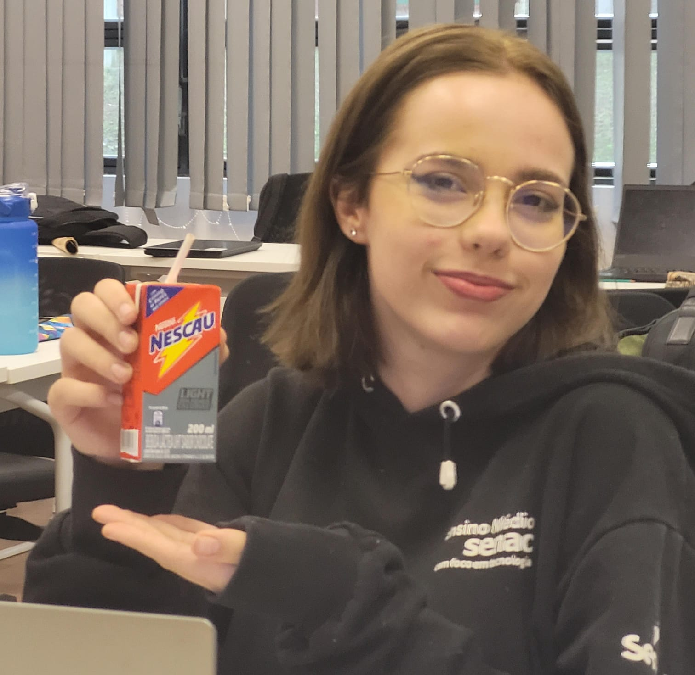

Júlia Scrinz da Silva

Luisa Johanna da Rosa
Mercadores e suas Soft Skills
No mercado de trabalho atual, é exigido e esperado dos trabalhadores diversas habilidades, além do conhecimento técnico.
Computadores Humanos
Eram seus profissionais pessoas que podiam resolver enigmas complicados. Mas como essa profissão acabou?